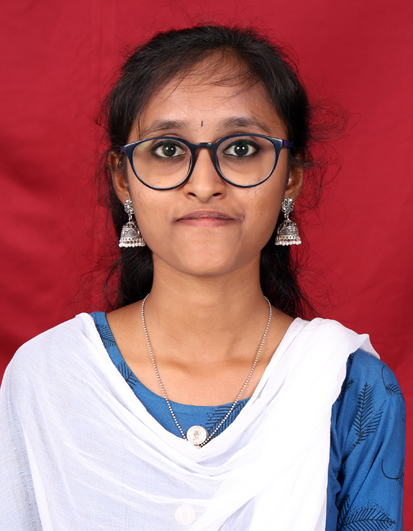
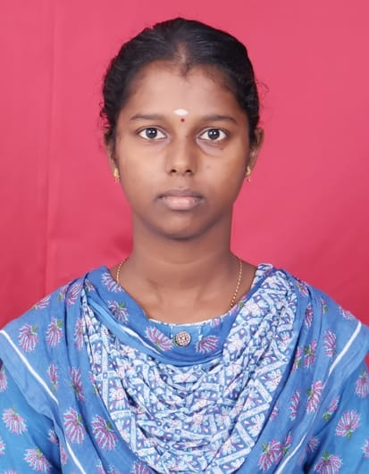

Our Mission
To empower farmers, students, and agri-entrepreneurs by democratizing access to cutting-edge agricultural knowledge. We strive to bridge the gap between traditional farming wisdom and modern technological advancements, ensuring that sustainable practices are accessible to everyone, everywhere.
Our Vision
To cultivate a global community where agriculture thrives on innovation and sustainability. We envision a future where every farmer is equipped with the tools and knowledge to feed the planet, restore the earth, and build a prosperous, resilient food system for generations to come.
Our Values
Innovation, Sustainability, Community, and Knowledge Sharing.
Meet the Creators

Vaishnavi Battina

Nivedha U
